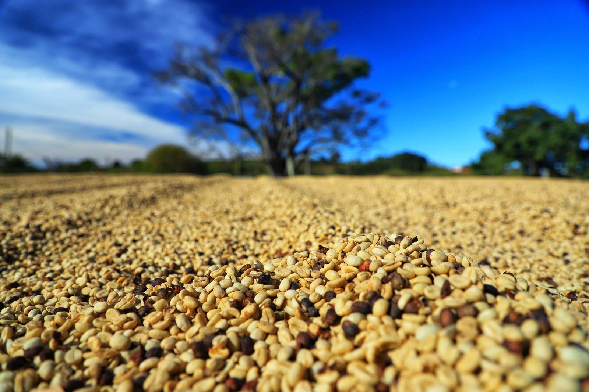

Novidades
AGRO PAULISTA CRESCE 9,4% NO PRIMEIRO SEMESTRE DE 2024, PUXADO PELO SETOR CANAVIEIRO

No setor do agronegócio, as exportações paulistas no primeiro semestre de 2024 aumentaram 8,9%, alcançando US$ 14,00 bilhões. As importações também apresentaram crescimento de 7,3%, totalizando US$ 2,78 bilhões, gerando um superávit de US$ 11,22 bilhões, aumento de 9,4% em relação ao mesmo período de 2023.
O levantamento realizado pelo coordenador da Agência Paulista de Tecnologia dos Agronegócios (Apta), Carlos Nabil Ghobril, e os pesquisadores José Alberto Ângelo e Marli Dias Mascarenhas Oliveira, do Instituto de Economia Agrícola (IEA-Apta), vinculado à Secretaria de Agricultura e Abastecimento de São Paulo, aponta que a participação das exportações do agronegócio paulista no total do estado no acumulado de janeiro a junho de 2024 foi de 42,2%, enquanto a participação das importações setoriais foi de 7,7%.
Na análise dos resultados de junho de 2024 em comparação com junho de 2023, houve uma redução de 16,2% nas exportações do agronegócio paulista, impactada pela queda nas vendas de soja em grão (-26%), açúcar (-36%) e carne bovina (-18%). Em contrapartida, houve aumento nos valores de suco de laranja (55%), café verde (45%) e celulose (104%).
Nos demais setores da economia paulista, as exportações totalizaram US$ 19,17 bilhões e as importações, US$ 33,35 bilhões, resultando em um déficit de US$ 14,18 bilhões. O desempenho positivo do agronegócio estadual teve importante papel para evitar um déficit ainda maior no desempenho do saldo da Balança Comercial do Estado de São Paulo no primeiro semestre de 2024.
Exportações do Agronegócio Paulista por Grupos de Produtos
Os cinco principais grupos de exportação do agronegócio paulista no primeiro semestre de 2024 foram:
Complexo Sucroalcooleiro: 37% de participação totalizando US$ 5,18 bilhões (91,1% açúcar e 8,9% etanol)
Produtos Florestais: 11% de participação com total de US$ 1,54 bilhão (53,0% celulose e 39,7% papel)
Complexo Soja: 11% de participação registrando total de US$ 1,54 bilhão (82,3% soja em grão)
Carnes: 10,8% de participação alcançando valor de US$ 1,51 bilhão (83,3% carne bovina)
Sucos: 8,2% de participação com total de US$ 1,15 bilhão (97,7% suco de laranja)
Esses cinco grupos representaram 78,0% das vendas externas setoriais paulistas. O grupo do café, tradicional no estado, aparece em sexto lugar, com 4,5% de participação com total de vendas de US$ 634,95 milhões (74,2% café verde e 22,4% café solúvel).
Houve variações importantes nas exportações dos principais grupos em comparação ao primeiro semestre de 2023: aumentos para o complexo sucroalcooleiro (+35,8%), café (+29,6%), sucos (+19,1%) e florestais (+17,4%); e quedas para o complexo soja (-39,7%) e carnes (-0,5%).
DESTINOS DAS EXPORTAÇÕES DO AGRONEGÓCIO PAULISTA
Os principais destinos das exportações do agronegócio paulista no primeiro semestre de 2024 foram:
China: US$ 2,88 bilhões (20,6% do total, variação negativa de 13,7%)
União Europeia: US$ 1,74 bilhão (12,4% do total, crescimento de 7,7%)
Estados Unidos: US$ 1,44 bilhão (10,3% do total, variação positiva de 9,0%)
Outros destinos importantes incluem Indonésia (3,9%), Índia (3,8%), Emirados Árabes Unidos (3,1%), Bangladesh (2,8%), Arábia Saudita (2,3%), Argélia (2,1%) e Egito (2,0%).
Balança Comercial do Brasil
No primeiro semestre de 2024, a balança comercial brasileira registrou um superávit de US$ 42,31 bilhões, com exportações de US$ 167,61 bilhões e importações de US$ 125,30 bilhões. Esse resultado representa uma queda de 5,2% no saldo da balança em relação ao mesmo período de 2023.
As exportações do agronegócio brasileiro no primeiro semestre de 2024 apresentaram uma redução de 0,4% em comparação ao mesmo período de 2023, totalizando US$ 82,39 bilhões (49,2% do total nacional). As importações aumentaram 14,2%, registrando US$ 9,51 bilhões (7,6% do total nacional).
O saldo da balança comercial do agronegócio registrou um superávit de US$ 72,88 bilhões, uma redução de 2,0% em relação ao primeiro semestre de 2023.
Exportações do Agronegócio Brasileiro por Grupos de Produtos
Os cinco principais grupos de exportação do agronegócio brasileiro no primeiro semestre de 2024 foram:
Complexo Soja: US$ 33,53 bilhões (83,2% soja em grão e 14,9% farelo de soja)
Carnes: US$ 11,81 bilhões (48,1% carne bovina, 38,6% carne de frango e 10,8% carne suína)
Complexo Sucroalcooleiro: US$ 9,22 bilhões (93,9% açúcar e 6,1% etanol)
Produtos Florestais: US$ 8,34 bilhões (59,6% celulose e 25,1% madeira)
Café: US$ 5,31 bilhões (91,9% café verde e 7,3% café solúvel)
Esses grupos representaram 82,7% das vendas externas setoriais brasileiras. Comparado ao primeiro semestre de 2023, houve variações importantes: aumentos para o complexo sucroalcooleiro (+54,1%), café (+46,1%), florestais (+11,9%) e carnes (+1,6%); e redução para o complexo soja (-17,6%).
“Esses dados ressaltam a importância do agronegócio no desempenho econômico e comercial tanto do estado de São Paulo quanto do Brasil, destacando-se como um setor fundamental para a balança comercial positiva do país”, afirmam os pesquisadores.
CAMPANHA "SISTEMA CNA/SENAR"
Campanha ‘Sistema CNA/Senar: com o produtor ontem, hoje e sempre’ mostra ações no Sul. A campanha "Sistema CNA/Senar: com o produtor ontem, hoje e sempre", veiculada domingo (7) em rede nacional, vai mostrar como estão essas e outras ações de ajuda às famílias atingidas pela tragédia das enchentes no Sul.
O trabalho para recuperar casas, bens, maquinários, o solo, as lavouras, alimentar os animais, faz parte do SuperAção Agro Rio Grande do Sul, do Sistema CNA/Senar, que destinou R$ 100 milhões em recursos para todo o processo que envolve o diagnóstico, orientação até a ajuda técnica efetiva a partir das demandas dos produtores rurais.
Parte destas ações estarão na campanha “Sistema CNA/Senar: com o produtor ontem, hoje e sempre", que vai ao ar com comerciais veiculados nas emissoras de TV aberta, rádio, internet e nas redes sociais.
Os comerciais vão mostrar situações de recuperação e reconstrução vividas por produtores rurais como a limpeza da propriedade, entrega de kits básicos, de rolos de feno para a alimentação dos animais, análise de solo, os diagnósticos técnicos individualizados e até os atendimentos médicos remotos de famílias do campo.
As ações do SuperAção Agro RS estão sendo realizadas em parceria com a Federação da Agricultura e Pecuária do Estado do Rio Grande do Sul (Farsul) e com o Senar-RS. Técnicos e instrutores do Senar de outros estados também estão apoiando as equipes locais.
A safra paranaense de café em 2024 está projetada entre 700 e 750 mil sacas

Paraná pode produzir até 750 mil sacas de café em 172 municípios em 2024, aponta boletim. A safra paranaense de café em 2024 está projetada entre 700 e 750 mil sacas, volume que representa uma estabilidade na comparação ao produzido na safra anterior. As informações são do Boletim de Conjuntura Agropecuária referente à semana de 10 a 16 de maio, elaborado pelos técnicos do Departamento de Economia Rural (Deral), da Secretaria da Agricultura e do Abastecimento (Seab).
De acordo com o Deral, as condições climáticas em geral até o momento estão favoráveis, apesar de períodos de calor excessivo e poucas chuvas. A maturação está mais uniforme neste ano e os trabalhos de colheita estão iniciando e serão intensificados nas próximas semanas.
Em 2023 o Paraná produziu 722 mil sacas beneficiadas, volume 48,2% superior à colheita de 2022, que foi severamente castigada pelas adversidades climáticas registradas no ciclo anterior, como geadas e seca. A área cultivada soma 26.180 hectares, há registros de produção de café em 172 municípios. Os cinco principais produtores são Carlópolis, Pinhalão, Ibaiti, Tomazina, no Norte Pioneiro, e Apucarana, no Vale do Ivaí, que juntos responderam com 48,5% do volume paranaense.
Segundo o economista do Deral, Paulo Franzini, os primeiros meses de 2024 foram marcados por negociações travadas, afetadas pelas fortes oscilações nas cotações na ICE e também pelas incertezas do clima, situações que geram muita insegurança para os cafeicultores. No mercado físico brasileiro os preços tiveram altas significativas, recuperando em parte os patamares praticados anteriormente.
O preço médio recebido pelos produtores paranaenses, segundo levantamento mensal do Deral, ficou em R$ 1.033,72 por saca beneficiada em abril de 2024, contra os R$ 992,14 em abril do ano passado. O valor médio recebido em 2023 foi de R$ 846,45 por saca, recuo de 26,7% na comparação com o praticado em 2022, de R$ 1.155,36. O relatório de abril do Deral indica que 82% da safra anterior havia sido comercializada pelos cafeicultores do Paraná.
No contexto mundial, a safra de café 2023/24 está projetada em 171,4 milhões de sacas beneficiadas de 60 kg, elevação de 4,2% em comparação com o período anterior, sendo os principais países produtores, respectivamente, Brasil, Vietnã e Colômbia. A produção brasileira está prevista em 58,08 milhões de sacas, conforme levantamento divulgado em janeiro pela Companhia Nacional de Abastecimento (Conab), volume 5,5% superior à produção de 2023. O segundo levantamento deverá ser divulgado ainda em maio.